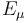
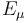
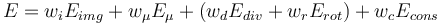

BUnwarpJ
| bUnwarpJ | |
|---|---|
| Project | Fiji |
| URL | https://imagej.net/BUnwarpJ |
| Source | on GitHub |
| License | GPLv3 |
| Release | 2.6.8 |
| Date | Fri May 19 09:28:54 CDT 2017 |
| Development status | Stable |
| Support status | Active |
| Team | |
| Founders | Ignacio Arganda-Carreras, Jan Kybic, Albert Cardona |
| Leads | Ignacio Arganda-Carreras |
| Developers | - |
| Debuggers | Ignacio Arganda-Carreras |
| Reviewers | Ignacio Arganda-Carreras |
| Support | Ignacio Arganda-Carreras |
| Maintainers | Ignacio Arganda-Carreras, Curtis Rueden |
| Contributors | Jan Kybic, Albert Cardona, Johannes Schindelin, Mark Hiner |

|
This ImageJ/Fiji plugin performs 2D image registration based on elastic deformations represented by B-splines. The invertibility of the deformations is enforced through a consistency restriction.
For a quick start, you can have a look at the video tutorial (awarded at the Second ImageJ User & Developer Conference).
Contents
- 1 General Description
- 2 Technical Explanations
- 3 User Manual
- 4 Downloads
- 5 Frequently Asked Questions
- 5.1 How do I choose the weights? What does each of the weights really mean?
- 5.2 How do I choose the initial and final deformations? What do they mean?
- 5.3 Can bUnwarpJ register 3D images?
- 5.4 How do I cite bUnwarpJ?
- 5.5 Can I run bUnwarpJ without the graphical interface?
- 5.6 My result images are 32-bit although my input images are 8-bit, is that a bug?
- 5.7 How do I integrate the SIFT/MOPS results into bUnwarpJ?
- 5.8 What does "source and target" mean? Which image is being transformed?
- 5.9 What is the format of the raw transformation file?
- 6 References (Citation)
- 7 License
- 8 Acknowledgements
General Description
bUnwarpJ is an algorithm for elastic and consistent image registration developed as an ImageJ plugin. It performs a simultaneous registration of two images, A and B. Image A is elastically deformed in order to look as similar as possible to image B, and, at the same time, the "inverse" transformation (from B to A) is also calculated so a pseudo-invertibility of the final deformation could be guaranteed. Two images are given as a result: the deformed versions of A and B images.
Technical Explanations
This image registration algorithm is based on the minimization of an energy functional that includes the dissimilarity between the source and target images -in both directions-  , an optional landmark constraint , a regularization term
, an optional landmark constraint , a regularization term  , and an energy term
, and an energy term  that accounts for the geometrical consistency between the elastic deformation in both directions. Namely, the energy function is given by
that accounts for the geometrical consistency between the elastic deformation in both directions. Namely, the energy function is given by
- 
Where the weights of every term are set by the user in the main window of the plugin. The optimization process is a Levenberg-Marquardt minimization enhanced by a Broyden-Fletcher-Goldfarb-Shanno (BFGS) estimate of the local Hessian of the goal function, and both, images and deformations are represented by cubic B-splines.
User Manual
Generalities
The plugin can be called from the main ImageJ/Fiji menu under Plugins > Registration > bUnwarpJ. Two images (8, 16, 32-bit grayscale or RGB Color) need to be opened in order to be able to use the plugin. If so, the maing dialog window of the plugin will open.

Both selected images will work simultaneously as source and target, their tags are there only for the sake of clarification. The registration mode can be "Accurate", "Fast" and "Mono". The registration mode "Mono" (included since version 2.5) makes the program to perform only unidirectional registration, i.e. from source to target. The two registration modes "Accurate" and "Fast" involve performing bidirectional registration and affect the stopping criteria internally used by the program. More internal options can be modified in the "Advanced Options" panel. This panel gives you access to most of the internal parameters of the algorithm. The "Initial" and "Final" deformation lists allow you to select the coarsest and finest scale of the spline deformation field. "Very coarse" corresponds to 4 splines (one in each corner of the image). As you increase the deformation level, the number of splines is doubled in each direction (horizontal and vertical).
Since bUnwarpJ 2.5 there is a new parameter on the main window to allow subsampling the input images. The registration will be then calculated using the subsampled versions of the images but the results will be applied to the original ones. The image subsampling parameter can be chosen between 0 and 7, i.e. the image dimensions can be reduced by a factor of 20 = 1 to 27 = 128. This is very useful when registering large images.
The different weights of the goal function control the relative weight of each one of the terms. These weights are not restricted to be between 0 and 1, and they may take any value as long as it is non-negative. You can see a description of the different function weights in the presentation "bUnwarpJ: Consistent and Elastic Registration in ImageJ. Methods and Applications.", given at the Second ImageJ User & Developer Conference (2008) or have a look at the FAQ section.
The stop threshold is used by the algorithm to stop the optimization process at each multiresolution level when the error relative change is not larger than this threshold.
RGB Color images will be converted to grayscale during the registration process but the resulting transformations will be applied to the original color images.
If you want to exit the plugin, press "Cancel". When you want the plugin to perform the registration press "OK". After running the plugin (on "Accurate" or "Fast" mode), the results are two stacks with the following three images:
- One image (warping image) registered as to fit the other image (fixed image);
- The fixed image;
- The warping mask with the same deformation as the warping image.
The final registration values appear in a separate ("Results") window.
The following figure shows one of the resulting stacks from registering a source (moving) Lena image to a target (fixed) warped version of the same image:

The verbose mode produces more information:
- The elastic deformation as a vector field. Each point in the fixed image must be deformed according to this field to fit into the warping image;
- The grid obtained after deforming the fixed image with the vector field described above;
- The step values of the optimization process in a separate ("Results") window.

Since both, source and target images work as moving and fixed images, there are two sets (stacks) of results: from source to target and from target to source.
The "Mono" mode produces only results from the source to the target image.
During the registration process, the current difference images and a mapping of the grid from the fixed images onto the moving images are shown:

During the registration process the toolbar will be changed to

Click on the stop button to stop the process. The output at the current state of the optimization will be returned in the normal way.
Landmarks
When the plugin is called and before pressing "OK" in the main window, the toolbar changes its appearance and it is possible to manually add landmarks to the selected images:

The depressed button indicates that you may add a landmark now. Landmarks are added in either image. The landmark will be automatically placed in the same position on both images. The new landmark becomes the "current landmark" (indicated by a thicker [+] sign in the current image and a [×] sign in the other image, while all the rest are represented by [+] signs). To move any landmark, press on the "Move crosses" button:

Click and drag on any landmark to make it correspond to the same position in both images. Here goes an example of the two Lena images with corresponding landmarks:

Landmarks can be removed through the "Remove crosses" button:

This is the way of manually adding landmarks to the registration process. However, since bUnwarpJ v2.0 there is the option as well of using automatic landmarks as explained in the section SIFT and MOPS support, or manually adding point selections in both images before calling the plugin. If the number of point selections is the same in both images, they will be transformed into landmarks.
When exiting bUnwarpJ all the images are restored to their previous state, i.e. the original regions of interest and point selections are restored.
Masks
This program allows you using masks in two mutually exclusive ways. In the first way, masks are introduced together with the input images. In this mode, input images must be a stack of images (first slice: the image itself, second slice: the mask). In this way, the mask can have any shape. In the second way, the input images must not be stacks and simple polygonal masks can be used. These masks are defined using the two buttons ("Draw an inner mask" and "Draw an outer mask") shown below:


The inner mask keeps the information in the interior of the polygon, while the outer mask keeps the information in the exterior of the polygon. The thrown-out information is grayed. Here goes an example of an inner mask:

Masks can be used for one of the images, both, or none. You can put a mask in one of the images and not in the other, you can put a mask (with different shapes) in both images, or you may not use masks at all. After calling the plugin, the masks are erased and the initial images are restored.
Input/Output options
When using the "Input/Output Menu" from the toolbar, we have the possibility of processing different input and output files that will affect the registration.


In the last release, the plugin presents the following Input/Output options:
- Load Landmarks: it allows loading landmarks files.
- Save Landmarks As: it allows saving the image landmarks into a file.
- Show Landmarks: it forces the landmarks to be displayed in a separate table.
- Load Elastic Transformation: it loads an elastic transformation from a file and applies it to the so-called source image. The transformation file must be in the format of the plugin B-spline transformations, i.e. the same format as the files created with the "Save Transformation" option.
- Load Raw Transformation: it loads a raw transformation from a file and applies it to the so-called source image. The transformation file must be in "raw" format, i.e. the same format as the files created with the "Convert Transformation To Raw" option. See the raw transformation example for a format description.
- Compare Opposite Elastic Transformations: it calculates the warping index of two elastic transformations, i.e. the average of the geometrical distance between every pixel and its version after applying both transformations (direct and inverse). This value is given as a result. The transformation files must be in the format of the plugin B-spline transformations (same format as the files created with the "Save Transformation" option).
- Compare Elastic/Raw Transformations: it calculates the warping index of an elastic and a raw transformation (same direction). The second transformation file must be in "raw" format, i.e. the same format as the files created with the "Convert Transformation To Raw" option.
- Compare Raw Transformations: it calculates the warping index of two raw transformations (same direction). The transformation file must be in "raw" format, i.e. the same format as the files created with the "Convert Transformation To Raw" option.
- Convert Transformation To Raw: it converts a B-spline transformation file into a raw transformation file.
- Convert Transformation To Elastic: it converts a raw transformation file into a B-spline transformation file (approximation).
- Compose Elastic Transformations: it composes two elastic transformations into a raw transformation. The input files must be in the B-spline transformation format, and the output file will be in "raw" format.
- Compose Raw Transformations: it composes two raw transformations into another raw transformation. Both input and output files will be in "raw" format.
- Compose Raw and Elastic Transformations: it composes one raw transformation and one elastic transformation into a raw transformation.
- Invert Raw Transformation: it approximates the inverse of a raw transformation.
- Evaluate Image Similarity: it calculates de current similarity error between the source and target images. The results is displayed in the "Results" window.
- Adapt Coefficients: it transforms the coefficients of an specific elastic transformation according to a real image factor. Very useful for example when we have very large images. We can register subsampled versions of our images (let us say 4 times smaller) and then adapt the result transformations (image factor = 4) so we can apply them to the high resolution images.
- Load Source Mask: it loads a mask from file (binary image) in the source image.
- Load Source Initial Affine Matrix: it loads an affine matrix as starting point for the source-target transformation from a text file. The format of the text files is as follows:
cos(angle) -sin(angle) sin(angle) cos(angle) Translation_X Translation_Y
These new options (since version 1.1) allow the user comparing the results of our program with any other registration method.
You can also test bUnwarpJ with Spline Deformation Generator, an ImageJ plugin that allows the user to generate five different image deformations: elastic, fisheye, perspective, barrel/pincushion and smile effect. Spline Deformation Generator uses the same raw transformation file format as bUnwarpJ, so they are completely compatible.
Macro call
bUnwarpJ is completely compatible with the ImageJ macro language. When in doubt, use the Macro Recorder to identify which commands need to be used.
Main dialog
The user can launch the plugin from a macro by setting all the parameters of the plugin main dialog, for instance:
run( "bUnwarpJ", "source_image=A target_image=B registration=Accurate
image_subsample_factor=0 initial_deformation=[Very Coarse]
final_deformation=Fine divergence_weight=0 curl_weight=0 landmark_weight=0
image_weight=1 consistency_weight=10 stop_threshold=0.01
save_transformations
save_direct_transformation=/my-path/A_direct_transf.txt
save_inverse_transformation=/my-path/B_inverse_transf.txt");
Notice the path to the transformation files are only needed if the "save_transformations" option is used.
I/O methods
To use the main Input/Output options from a macro, there is a corresponding static method defined in the main class (bUnwarpJ_). Again, the Macro Recorder will provide with the right macro command for each of them. For example:
- Load elastic transformation to source image:
call("bunwarpj.bUnwarpJ_.loadElasticTransform", "/my-path-to-transf/source_elastic_transf.txt", "target-image.png", "source-image.png");
- Load raw transformation to source image:
call("bunwarpj.bUnwarpJ_.loadRawTransform", "/my-path-to-transf/source_raw_transf.txt", "target-image.png", "source-image.png");
- Compare opposite elastic transforms:
call("bunwarpj.bUnwarpJ_.compareOppositeElasticTransforms", "/my-path-to-transf/inverse_transf.txt", "/my-path-to-transf/direct_transf.txt", "target-image.png", "source-image.png");
- Compare elastic and raw transforms (same direction):
call("bunwarpj.bUnwarpJ_.compareElasticRawTransforms", "/my-path/source_direct_transf.txt", "/my-path/source_direct_transf_RAW.txt", "target-image.png", "source-image.png");
- ... and so on.
Old methods
Before bUnwarpJ v2.6.7, these calls were done using methods that work on image files (not open in ImageJ). For backward compatibility reasons, these methods are still usable: elasticTransformImageMacro, rawTransformImageMacro, composeRawElasticTransformationsMacro, composeRawTransformationsMacro, composeElasticTransformationsMacro, compareElasticRawTransformationsMacro, compareElasticTransformationsMacro, compareRawTransformationsMacro, convertToRawTransformationMacro, adaptCoefficientsMacro.
Notice here that the input and output file names must include the path, since they are not taken from the list of images. For instance, if we want to apply an elastic deformation stored in the file A_direct_transf.txt to the source image A.jpg with target image B.jpg and save the result in output.tif, we call:
call( "bunwarpj.bUnwarpJ_.elasticTransformImageMacro", "My_path/A.jpg",
"My_path/B.jpg", "My_path/A_direct_transf.txt", "My_path/output.tif" );
Command line call
bUnwarpJ might be called as well as an ImageJ command from the command line. In the command line, the program offers the following options:
-help: shows the syntax of the program-align: launches the registration of two input images-elastic_transform: transforms the source image with a given elastic deformation (previously calculated)-raw_transform: transforms the source image with a given raw deformation (previously calculated)-compare_elastic: compares two previously calculated opposite elastic deformations through the warping index-compare_elastic_raw: compares an elastic deformation with a raw deformation (both direct transformations) through the warping index-compare_raw: compares two previously calculated and direct raw deformations through the warping index-convert_to_raw: converts an elastic transformation into raw format-compose_elastic: composes two elastic deformations, the result will be in raw format-compose_raw: composes two raw deformations, the result will be too in raw format-compose_raw_elastic: composes a raw deformation and an elastic one. Result in raw format-adapt_transform: adapts an specific elastic transformation given a resolution image factor
For instance, to see the program help we can call the program from the command line (where $IJDIR is the directory where ImageJ is installed) like this in Linux:
java -Xmx512m -cp $IJDIR/ij.jar:$IJDIR/plugins/bUnwarpJ_.jar bunwarpj.bUnwarpJ_ -help
For the rest of the options, follow the help instructions.
Consistency weight
The main reason to create bUnwarpJ was the idea of enforcing deformations' consistency through the consistency weight. This number forces the algorithm to move into solutions that ensure the invertibility of the resulting deformations. Therefore, the higher this number is, the more strictly one deformation is the inverse of the other one. Due to the different units, there is no rule for selecting the right parameters, they need to be found experimentally.
One important advantage of bUnwarpJ over the previous method lies in the fact that many registration problems can be solved without using the landmarks and regularization terms of the energy function (that means setting their corresponding parameters to 0.0). Therefore, no user interaction is needed and the computational complexity of the algorithm is reduced.
SIFT and MOPS plugin support
The last release of bUnwarpJ has compatibility with Stephan Saalfeld's plugin for automatic feature extraction (implementations of SIFT and MOPS algorithms).
An explanation of the parameters is here. This plugin is also integrated in Fiji.
After applying SIFT or MOPS methods, you will get two sets of corresponding points in both images. If you call then bUnwarpJ, the corresponding points will appear as source and target landmarks.
Downloads
The latest stable distribution of bUnwarpJ can always be found included within Fiji and the latest released JARs are available in the GitHub repository. If you detect any bug, please feel free to contact the maintainer. Any feedback will be very appreciated.
API documentation
The API documentation can be reached online.
Installation
In Fiji, bUnwarpJ comes installed by default. In ImageJ, you must simply download the latest bUnwarpJ_.jar to the Plugins folder of ImageJ, restart ImageJ and there will be a new "Registration > bUnwarpJ" command in the Plugins menu.
To execute bUnwarpJ as a macro or from the command line, see the description in the User Manual.
Frequently Asked Questions
How do I choose the weights? What does each of the weights really mean?
The weights need to be chosen experimentally, test and error is the only way of knowing which are the best weights to register your images, but let 's talk about them in detail:
Divergence and curl weights
The divergence and curl weights regularize the deformation by penalizing the divergence and curl of the deformation vector field. In other words, we penalize vector fields with many points like this:
These are attractor points that make the deformation too rough. One of them would not be a problem (it could be just a rotation), but many yes. So controlling them we make the deformation smooth. If you see that your transformations get too rough, it is a good idea to use them. 0.1 and 0.1 are usually good values if there's no prior knowledge about the deformation shape.
Landmark weight
It forces the deformations to fit the landmark points on both images. Set it to 1.0 unless you're not using landmarks.
Image weight
This is the weight to control the pixel values differences. Leave it to 1.0 unless you want to do for instance landmark-only registration.
Consistency weight
It forces the resulting deformations to be one (source to target) as close as possible to the inverse of the other one (target to source). Values between 10.0 and 30.0 usually work fine. It is only taken into account for registration modes "Fast" or "Accurate".
How do I choose the initial and final deformations? What do they mean?
These values determine the level of detail of the initial and final deformations. In bUnwarpJ this is defined by the number of B-splines that we use to represent the deformations:
| Deformation | Number of intervals (in the B-spline grid) |
|---|---|
| Very coarse | 1x1 |
| Coarse | 2x2 |
| Fine | 4x4 |
| Very Fine | 8x8 |
| Super fine | 16x16 |
How to choose the initial and final deformation? It depends on how misaligned your images are. If they start very far away from the right alignment, it is usually a good idea to go from "Very Coarse" to "Very Fine". If they start close to the right alignment, using a very coarse initial deformation could cause the algorithm to fail. So, in that case, it would be enough to set initial deformation to "Fine" and final deformation to "Very Fine". Use "Super Fine" only when you need a very high level of accuracy, because it makes the algorithm quite slower depending on the image sizes.
Can bUnwarpJ register 3D images?
Unfortunately, no. If you call bUnwarpJ with two stacks as input images, it will use the second slice of every stack as the corresponding mask of the first slice. If you're looking for 3D image registration software, you may want to have a look at Elastix, an excellent open source toolkit to perform image registration written in ITK.
How do I cite bUnwarpJ?
The corresponding paper citation is on the References.
Can I run bUnwarpJ without the graphical interface?
Yes, you can. You have different possibilities:
- You could call the program from the command line as explained in the user manual,
- or you can make a macro call in batch mode,
- or you could as well create a script and use any of the methods called bUnwarpJ_.alignImagesBatch.
My result images are 32-bit although my input images are 8-bit, is that a bug?
No this is not a bug. To calculate the elastic-transformed images bUnwarpJ needs to interpolate the pixel values, so the first step in the process consists of converting the 8-bit (byte) images into 32-bit (float). You may want to convert them back to 8-bit after registration (Image > Type > 8-bit) and adjust the contrast (Process > Enhance Contrast).
How do I integrate the SIFT/MOPS results into bUnwarpJ?
If you are using the ImageJ graphical interface, wait until the SIFT/MOPS plugin shows the results and then call immediately bUnwarpJ. The correspondences found after the SIFT or MOPS algorithms are automatically converted into bUnwarpJ landmarks. Please, be aware that if you touch any of the input images before calling bUnwarpJ you will probably loose the point selections (SIFT/MOPS correspondences) of that image and then no landmark will be displayed.
If you do a macro call or use the method bUnwarpJ_.alignImagesBatch, the landmarks will be read as well from the point selections of the input images.
If you are calling bUnwarpJ from the command line, you will have to save the SIFT/MOPS point selections in a file and use the file name in the command line call.
What does "source and target" mean? Which image is being transformed?
The "source" image is the image being transformed, i.e. the moving image, while the "target" image is the fixed image. In the "Accurate" and "Fast" modes, both images work as source and target.
What is the format of the raw transformation file?
The raw transformation file should be a text file with the following structure:
Width=[TARGET IMAGE WITH] Height=[TARGET IMAGE HEIGHT] X Trans ----------------------------------- [(Height * Width) coordinates representing the X transformation for every pixel on the target image] Y Trans ----------------------------------- [(Height * Width) coordinates representing the Y transformation for every pixel on the target image]
References (Citation)
The algorithm implemented on bUnwarpJ and its technical explanations are detailed on a publication. If you use it successfully for your research please be so kind to cite our work:
- I. Arganda-Carreras, C. O. S. Sorzano, R. Marabini, J.-M. Carazo, C. Ortiz-de Solorzano, and J. Kybic, "Consistent and Elastic Registration of Histological Sections using Vector-Spline Regularization," Lecture Notes in Computer Science, Springer Berlin / Heidelberg, volume 4241/2006, CVAMIA: Computer Vision Approaches to Medical Image Analysis, pages 85-95, 2006.
The related paper of the previous work (UnwarpJ) is:
- C.Ó. Sánchez Sorzano, P. Thévenaz, M. Unser, "Elastic Registration of Biological Images Using Vector-Spline Regularization", IEEE Transactions on Biomedical Engineering, vol. 52, no. 4, pp. 652-663, April 2005.
License
This program is free software; you can redistribute it and/or modify it under the terms of the GNU General Public License as published by the Free Software Foundation (http://www.gnu.org/licenses/gpl.txt).
This program is distributed in the hope that it will be useful, but WITHOUT ANY WARRANTY; without even the implied warranty of MERCHANTABILITY or FITNESS FOR A PARTICULAR PURPOSE. See the GNU General Public License for more details.
Acknowledgements
bUnwarpJ has been developed during several years already and many people need to be acknowledged for:
It started as an extension of UnwarpJ from Carlos O. S. Sorzano and thanks to him and Jan Kybic at the Center for Machine Perception in Prague, bUnwarpJ was born in the summer 2005 and published online in 2006.
Many of the plugin updates and improvements would have never been possible without the hackathons that took place in Janelia Research Campus (Virginia, summer 2008) and the Institute of Neuroinformatics (Zürich, winter 2008).
Albert Cardona organized the hackathons and is responsible for the code parallelization and javascripting support.
Stephan Saalfeld made the SIFT/MOPS support possible.
Marta Rivera-Alba helped with the macro support and code debugging.
Johannes Schindelin is responsible for the Fiji integration and he is simply there whenever a Java problem comes up!